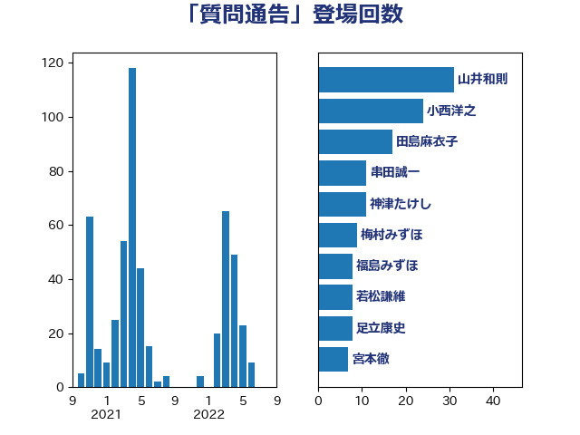

単語「質問通告」

| 山井和則 | 立憲民主党 | 31 回 |
| 小西洋之 | 立憲民主党 | 24 回 |
| 田島麻衣子 | 立憲民主党 | 17 回 |
| 串田誠一 | 日本維新の会 | 11 回 |
| 神津たけし | 立憲民主党 | 11 回 |
| 梅村みずほ | 日本維新の会 | 9 回 |
| 福島みずほ | 社会民主党 | 8 回 |
| 若松謙維 | 公明党 | 8 回 |
| 足立康史 | 日本維新の会 | 8 回 |
| 宮本徹 | 日本共産党 | 7 回 |
| 河野太郎 | 自由民主党 | 7 回 |
| 海江田万里 | 立憲民主党 | 7 回 |
| 東徹 | 日本維新の会 | 6 回 |
| 三宅伸吾 | 自由民主党 | 5 回 |
| 前原誠司 | 国民民主党 | 5 回 |
| 松原仁 | 立憲民主党 | 5 回 |
| 野田聖子 | 自由民主党 | 5 回 |
| 長妻昭 | 立憲民主党 | 5 回 |
| 麻生太郎 | 自由民主党 | 5 回 |
| 中島克仁 | 立憲民主党 | 4 回 |
| 古賀之士 | 立憲民主党 | 4 回 |
| 浅野哲 | 国民民主党 | 4 回 |
| 清水貴之 | 日本維新の会 | 4 回 |
| 田村憲久 | 自由民主党 | 4 回 |
| 音喜多駿 | 日本維新の会 | 4 回 |
| 高木かおり | 日本維新の会 | 4 回 |
| 上田清司 | 国民民主党 | 3 回 |
| 吉良州司 | 無所属 | 3 回 |
| 山岡達丸 | 立憲民主党 | 3 回 |
| 後藤祐一 | 立憲民主党 | 3 回 |
| 志位和夫 | 日本共産党 | 3 回 |
| 田嶋要 | 立憲民主党 | 3 回 |
| 田村智子 | 日本共産党 | 3 回 |
| 石垣のりこ | 立憲民主党 | 3 回 |
| 篠原豪 | 立憲民主党 | 3 回 |
| 細田健一 | 自由民主党 | 3 回 |
| 緒方林太郎 | 無所属 | 3 回 |
| 菅直人 | 立憲民主党 | 3 回 |
| 藤田文武 | 日本維新の会 | 3 回 |
| 西田昌司 | 自由民主党 | 3 回 |
| 近藤昭一 | 立憲民主党 | 3 回 |
| 中谷真一 | 自由民主党 | 2 回 |
| 国光あやの | 自由民主党 | 2 回 |
| 大島敦 | 立憲民主党 | 2 回 |
| 守島正 | 日本維新の会 | 2 回 |
| 岸真紀子 | 立憲民主党 | 2 回 |
| 市村浩一郎 | 日本維新の会 | 2 回 |
| 平将明 | 自由民主党 | 2 回 |
| 斉藤鉄夫 | 公明党 | 2 回 |
| 末次精一 | 立憲民主党 | 2 回 |
| 杉尾秀哉 | 立憲民主党 | 2 回 |
| 梅村聡 | 日本維新の会 | 2 回 |
| 浜田聡 | NHK党 | 2 回 |
| 浦野靖人 | 日本維新の会 | 2 回 |
| 牧島かれん | 自由民主党 | 2 回 |
| 牧義夫 | 立憲民主党 | 2 回 |
| 玄葉光一郎 | 立憲民主党 | 2 回 |
| 田名部匡代 | 立憲民主党 | 2 回 |
| 田村まみ | 国民民主党 | 2 回 |
| 美延映夫 | 日本維新の会 | 2 回 |
| 羽田次郎 | 立憲民主党 | 2 回 |
| 舩後靖彦 | れいわ新選組 | 2 回 |
| 萩生田光一 | 自由民主党 | 2 回 |
| 赤羽一嘉 | 公明党 | 2 回 |
| 道下大樹 | 立憲民主党 | 2 回 |
| 長谷川岳 | 自由民主党 | 2 回 |
| おおつき紅葉 | 立憲民主党 | 1 回 |
| ながえ孝子 | 無所属 | 1 回 |
| 一谷勇一郎 | 日本維新の会 | 1 回 |
| 下条みつ | 立憲民主党 | 1 回 |
| 井上信治 | 自由民主党 | 1 回 |
| 井上英孝 | 日本維新の会 | 1 回 |
| 仁木博文 | 無所属 | 1 回 |
| 伊藤俊輔 | 立憲民主党 | 1 回 |
| 伊藤孝恵 | 国民民主党 | 1 回 |
| 佐藤正久 | 自由民主党 | 1 回 |
| 倉林明子 | 日本共産党 | 1 回 |
| 前川清成 | 日本維新の会 | 1 回 |
| 加藤勝信 | 自由民主党 | 1 回 |
| 北村経夫 | 自由民主党 | 1 回 |
| 吉良よし子 | 日本共産党 | 1 回 |
| 国定勇人 | 自由民主党 | 1 回 |
| 大西健介 | 立憲民主党 | 1 回 |
| 太栄志 | 立憲民主党 | 1 回 |
| 安達澄 | 無所属 | 1 回 |
| 小寺裕雄 | 自由民主党 | 1 回 |
| 小沢雅仁 | 立憲民主党 | 1 回 |
| 小沼巧 | 立憲民主党 | 1 回 |
| 山添拓 | 日本共産党 | 1 回 |
| 川合孝典 | 国民民主党 | 1 回 |
| 打越さく良 | 立憲民主党 | 1 回 |
| 本村伸子 | 日本共産党 | 1 回 |
| 杉田水脈 | 自由民主党 | 1 回 |
| 松木けんこう | 立憲民主党 | 1 回 |
| 松本尚 | 自由民主党 | 1 回 |
| 林芳正 | 自由民主党 | 1 回 |
| 森まさこ | 自由民主党 | 1 回 |
| 森山浩行 | 立憲民主党 | 1 回 |
| 森田俊和 | 立憲民主党 | 1 回 |
| 浅田均 | 日本維新の会 | 1 回 |
| 源馬謙太郎 | 立憲民主党 | 1 回 |
| 玉木雄一郎 | 国民民主党 | 1 回 |
| 田村貴昭 | 日本共産党 | 1 回 |
| 石井章 | 日本維新の会 | 1 回 |
| 石原宏高 | 自由民主党 | 1 回 |
| 礒崎哲史 | 国民民主党 | 1 回 |
| 福島伸享 | 無所属 | 1 回 |
| 穀田恵二 | 日本共産党 | 1 回 |
| 空本誠喜 | 日本維新の会 | 1 回 |
| 篠原孝 | 立憲民主党 | 1 回 |
| 荒井優 | 立憲民主党 | 1 回 |
| 菊田真紀子 | 立憲民主党 | 1 回 |
| 藤井比早之 | 自由民主党 | 1 回 |
| 赤澤亮正 | 自由民主党 | 1 回 |
| 近藤和也 | 立憲民主党 | 1 回 |
| 遠藤敬 | 日本維新の会 | 1 回 |
| 重徳和彦 | 立憲民主党 | 1 回 |
| 野田佳彦 | 立憲民主党 | 1 回 |
| 金子恭之 | 自由民主党 | 1 回 |
| 鈴木俊一 | 自由民主党 | 1 回 |
| 鈴木義弘 | 国民民主党 | 1 回 |
| 鈴木貴子 | 自由民主党 | 1 回 |
| 長浜博行 | 無所属 | 1 回 |
| 阿部司 | 日本維新の会 | 1 回 |
| 階猛 | 立憲民主党 | 1 回 |
| 青柳陽一郎 | 立憲民主党 | 1 回 |
| 須藤元気 | 無所属 | 1 回 |
| 高良鉄美 | 無所属 | 1 回 |
| 高野光二郎 | 自由民主党 | 1 回 |